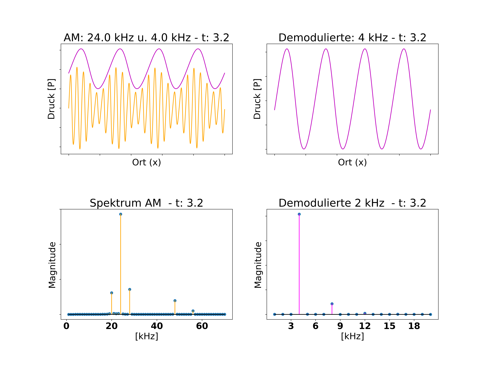

Anwendung von nichtlinearer Akustik für Ultraschall
Kolloquium
Christoph-Alexander Hermanns
Motivation
Verständnis der nichtlinearen Interaktion beim parametrischen Array.

Ultraschallschwingungen zu hörbaren Schall.
Schall
Schall ist das Resultat einer sich durch ein Medium periodisch ausbreitenden Störung.
Die Störung wird durch die mechanische Verschiebung der Teilchen des Mediums verursacht.
Dieses Phänomen wird als Schallwelle charakterisiert.
Bewegung im Medium Luft
Schall breitet sich als Kompressionwelle aus. Praktisches Beispiel
Schall - Einteilung nach Frequenz

Abhängig von der Frequzenz wird Schall eingeteilt:
Infraschall:
unter 16 Hz: Waschmaschinen, Heizungen
Hörbarer Schall:
16 Hz - 20 kHz: Sprache, Musik
Ultraschall:
über 16 kHz: Delfine, Feldermäuse - Echoortung
Die Lineare Akustik
Druck und Dichte verhalten zueinander linear.

Schallgeschwindigkeit als Charakteristik:
\(c_0^2 = \frac{\partial{p}}{\partial{\rho}}\) , Luft \(c_0 \approx 343 \frac{m}{s}\)
Gleichungen der linearen Akustik
Beschreibung der Vorgänge im Medium
- Zustandsgleichung: \(p = p_0 + \left(\frac{\partial p}{\partial \rho}\right) \cdot(\rho - \rho_0)\)
- Kontinuitätsgleichung: - \(\nabla(\rho \cdot v) = \frac{\partial\rho}{\partial t}\)
- Bewegungsgleichung: \(\rho v_t = -\nabla p\)
Gültige Funktion der Gleichungen

\(p(x) = \psi \mathrm{sin}(x)\)
\(p(t) = \psi \mathrm{sin}(t)\)
Anwendung: Superpositionsprinzip
Wellen überlagern sich ungestört.
Die Schwebung ist Beispiel einer Superposition.
Die Schwebung

Keine Erzeugung von neuen Frequenzen. :(
Die Nichtlineare Akustik
Starke Dämpfung hoher Frequenzen.
Übergänge der Zustände sind nichtlinear.
Zustandsübergänge in der Luft

Erweiterung der Zustandsgleichung: \(p = p_0 + \left(\frac{\partial p}{\partial \rho}\right) \cdot(\rho - \rho_0) {\color{red}+}\frac{1}{2}\left(\frac{\partial^2p}{\partial \rho^2}\right)\cdot(\rho- \rho)^2\)
Begrenzt gültige Funktion

\(u(x,t) = \mathrm{sin}(x -ut)\) und. \(x(t)\)
blau: \(t_0\) …
rot: \(t_{end}\)
Erzeugung von zusätzlichen Harmonischen

Zusätzliche Frequenzen werden erzeugt!
Starke Dämpfung der Schwingung.
Anwendung der Nichtlinearität
Eintonmodulation von zwei Schwingungen.
Ultraschall zu Hörschall

Bildung einer hörbaren Schwingung.
Ursache der Differenzfrequenz

In der Luft existieren zwei Felder:
- Ein Feld mit nichtlinearer Interaktion
- Ein linear akustisches Feld
Anwendungsmöglichkeit

Gezielte Beschallung von Bereichen im Raum.
Fazit
Nichtlineares Verhalten der Luft bei Ultraschall kann für
für besondere hörakustische Anwendungen nutzbar gemacht werden.
Danke für die Aufmerksamkeit

Weiterführende Links
Framework für Schallausbreitung
Matlab-plugin für Ultraschall
Hersteller von Richt-Lautsprechern
Modulationstechniken für ein Array
Einleitung Nichtlineare Akustik
Workshop Parametric Speaker
Bei weiteren Fragen:
hermannschris@googlemail.com
Quellen
Page 2: Bryan Cockfield(2019) - Creating Coeherent Sound Beams, Easily aberufen 24.02.20
Page 5: HausTechnik Dialog - Lärm abgerufen 30.01.20
Page 6: Dirk Olszweksi (2008) - Stark gerichtete Audio-Beschallung mit parametrischem Ultrschall-Lautsprecher P. 28
{kind=link}
Page 9: Christoph-A. Hermanns 2020 Python 3.7.4 - Schwebung
Page 13: Dirk Olszweksi (2008) - Stark gerichtete Audio-Beschallung mit parametrischem Ultrschall-Lautsprecher P. 28
Page 14: Christoph-A. Hermanns 2020 Python 3.7.4 - VeloUp
Page 15: Christoph-A. Hermanns 2020 Python 3.7.4 - DiffuseB1(Burgers)
Page 17: Christoph-A. Hermanns Python 3.7.4 - AdditionBurgers
Page 18: Vincent Tournat (2014) - Introductory Lecture on Nonlinear Acoustics
Page 19: Holosonics - Museums & Galleries 30.01.20
Page 21: Holosonics - YouTube abgerufen 24.02.20